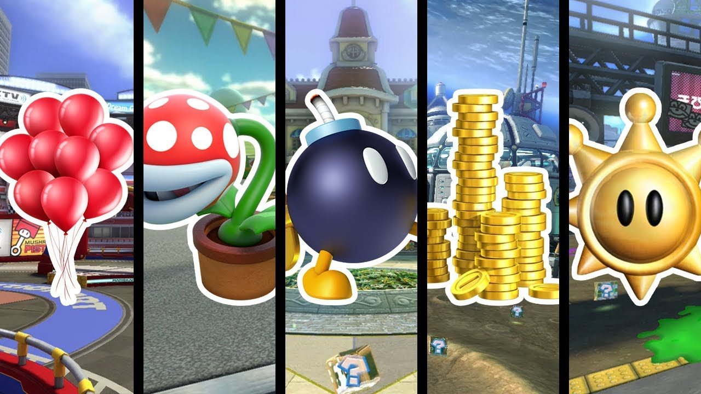
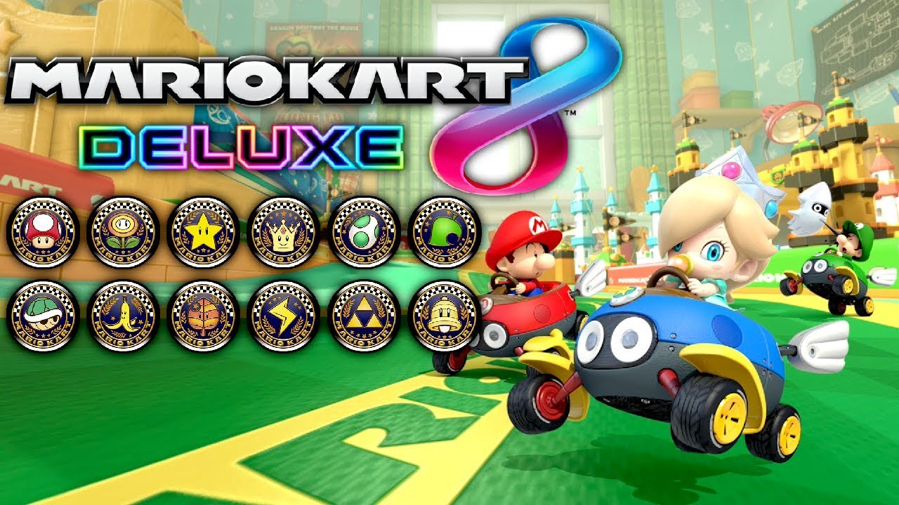

2. Qu'est-ce que Mario Kart 8 Deluxe ?
Mario Kart 8 Deluxe est un jeu de course développé par Nintendo. Il propose des circuits délirants, des personnages emblématiques de l'univers Mario, ainsi que des éléments de gameplay uniques, tels que l'utilisation d'objets pour gagner un avantage sur les adversaires. Cette version Deluxe inclut des améliorations par rapport à l'original, avec de nouveaux personnages, circuits et la possibilité de jouer en mode portable sur la console Nintendo Switch.
L'objectif principal de Mario Kart est simple : le joueur doit parcourir le plus rapidement possible des circuits, un certain nombre de fois, dans l'optique de franchir la ligne d'arrivée en premier. Les adversaires sont contrôlés soit par l'ordinateur, soit par d'autres joueurs. Pour se faciliter la tâche, le joueur a la possibilité d'utiliser de nombreux objets. Ceux-ci s'obtiennent en entrant en contact avec des cubes dotés d'un « ? » nommés "boîtes à objets". Les objets peuvent être offensifs, défensifs ou encore stratégiques, permettant au joueur de bénéficier d'une accélération supplémentaire ou encore d'enjamber un obstacle pour gagner du temps.
Présentons maintenant les modes présents dans Mario Kart 8 Deluxe et leurs caractéristiques.Le mode batailles
Dans ce jeu, il y a plusieurs modes de bataille distincts. Les voici en image :
-
Bataille de ballons
Dans ce mode de jeu, les joueurs s'affrontent sur un circuit et doivent essayer de donner le plus de dégâts possibles aux adversaires tout en se protégeant de ceux-ci. Les joueurs démarrent au début de chaque tour avec 5 ballons. Il est également possible de voler les ballons des adversaires à l'aide d'un objet (plusieurs objets sont utlisables pour cela). Pour le score, il peut évoluer de 2 façons :
- Lorsqu'un joueur ou un bot réussi à toucher un adversaire, il gagne un point.
- Lorsqu'un joueur ou un bot est KO, il perd la moitié de ses points.
Lorsqu'un figurant tombe KO, il respawn avec 3 ballons au lieu de 5. -
Traque sur la piste
A la manière du jeu "Gendarmes et voleurs", les joueurs sont répartis dans 2 camps et doivent atteindre leurs buts respectifs avant la fin du temps imparti. Si un joueur du camp des "voleurs" est encore en vie à la fin, c'est le camp des "voleurs" qui gagne. Sinon les "gendarmes" remportent la partie.
-
Bob-bombs à gogo
En reprenant le principe de la bataille de ballons, les joueurs doivent terminer avec le meilleur score possible. Mais qu'un seul objet est mis à leur disposition, les bob-bombs (ou tout simplement des bombes).
-
Bataille de pièces
Dans ce mode de battaille, chaque participant doit collecter le plus de pièces possibles. Il existe plusieurs moyens pour cette récolte. Le premier est tout simplement de rentrer en contact avec les pièces. Plus un participant collecte de pièces, plus la pile formée au-dessus de lui va grandir. Et donc celui-ci pourra éventuellement attirer les regards de ses concurrents. Ainsi, un deuxième moyen de collecter des pièces est d'en voler aux adversaires à l'aide d'un objet offrant une accélération (mais qui ne met pas de dégâts). Mais il faut faire attention à ne pas se prendre de dégâts, ou c'est la sentence. Autement dit, on perd un certain nombre de pièces.
-
Capture de soleil
Pour cette bataille, le but du jeu est de récupérer le soleil et de le garder le plus longtemps possible dans le temps imparti. Ici, le temps imparti est le compteur du soleil. Le participant gardant le soleil le plus longtemps remporte la partie. Lorsqu'un concurrent récupère le soleil, il augmente son compteur, et au fur et à mesure qu'il le garde en sa possession, son compteur continue d'augmenter. En parallèle, le compteur du soleil diminue. La partie se termine lorsque le compteur du soleil tombe à 0.
Les Grand-Prix
-

-
50cc
Ce niveau est plus adapté pour les débutants qui n'ont pas encore débuté le jeu.
-
100cc
Ce niveau est pour les joueurs qui s'y connaissent, et qui connaissent les mécaniques du jeu Mario Kart en général mais qui ne touche pas forcément beaucoup au jeu.
-
150cc
Ce niveau est pour les joueurs confirmés et qui sont proches du niveau professionnel. Si vous êtes en quête de challenge, ce niveau est fait pour vous. Lorsque vous complétez ce niveau, et obtenez des étoiles* (voir annexes), les même grand-prix sont en parallèle complétés avec le même pourcentage. Donc si vous avez l'habitude de jouer à Mario Kart, commencez directement ce niveau. A l'inverse, je vous conseille de commencer par le niveau 100 cc ou 50 cc en fonction de votre niveau. Les niveaux qui suivent sont tous les deux indépendants, donc si vous voulez terminer les grand-prix, il va falloir vous mesurer aux 2. -
150cc miroir
Ce niveau est sensiblement le même que le précédent, sauf que les trajectoires sont inversées.
-
200cc
Ce niveau est un niveau "hardcore" de par le fait que cela va extrêmement vite. Si vous êtes à la recherche de difficultés, ce niveau est fait pour vous.
Les Grand-Prix sont constitués de 4 circuits avec un niveau de difficulté plus ou moins élevé. Les premiers Grand-Prix sont en général plus faciles et sont là pour initier le joueur et qu'il puisse s'adapter à la vitesse. Dans chaque Mario Kart, il y a plusieurs niveaux de difficultés de par les vitesses (en cc). Nous allons donc présenter ces niveaux :
Les courses VS
-
Selon la difficulté
Il est possible de dire au jeu à quelle vitesse vous voulez jouer, et quel niveau auront les bots pendant la partie qui seront plus ou moins experts. Je vous conseille donc de sélectionner la vitesse et le niveau des bots en fonction de votre niveau.
-
Les objets
Le mode
Dans la version sans le DLC (nous en parlerons plus bas), il est possible de dire sélectionner un mode pour les objets.
- Mode normal
- Mode explosif
Je vous laisse les découvrir.Les modes de choix d'objet
Il existe au moins 4 choix possibles pour cette catégorie.
- Pièces
- Champignons
- Carapaces
- Ni objets ni pièces
Ce mode de jeu est un peu plus libre. Dans Mario Kart 8 Deluxe, il est possible de jouer à différentes variétés et de jouer selon nos envies. Énumérons-les :
Comme dans tout Mario Kart, il est possible de dire combien de circuits on veut faire et lesquels (ou en aléatoire).
Contre la montre
Si vous voulez vous mesurer aux circuits et tenter de faire le meilleur temps possible, optez pour le contre-la-montre.
Dans Mario Kart 8 Deluxe, les contre-la-montre sont disponibles pour les vitesses 150cc (mode normal) et 200cc (mode extrême). Dès qu'une course est terminée, on établie un temps de référence que l'on va peut-être devoir améliorer par la suite. Pour chaque course, un développeur du jeu a établie son temps de référence, et c'est ce temps que les joueurs doivent battre pour espérer terminer les contre-la-montre.
Annexes
- Ce jeu est jouable seul ou à plusieurs, et/ou dans différents modes de jeu :
- Dans ce jeu, il est possible de personnaliser son véhicule n'importe comment, en fonction de ce qu'il y a dans le garage.
Il y a pleins d'autres choses que je vous laisse découvrir.
- Il y a notamment un pass additionnel qui rajoute 48 circuits et notamment le principe d'objets aléatoires (que le joueur peut choisir également).
* les étoiles : dans ce Mario Kart, les grand-prix ont un système d'étoiles, qui fait que plus un grand-prix est bien réussi, plus on obtient d'étoiles (maximum 3). Le calcul se fait en fonction des points obtenus et des places obtenues à chaque course.